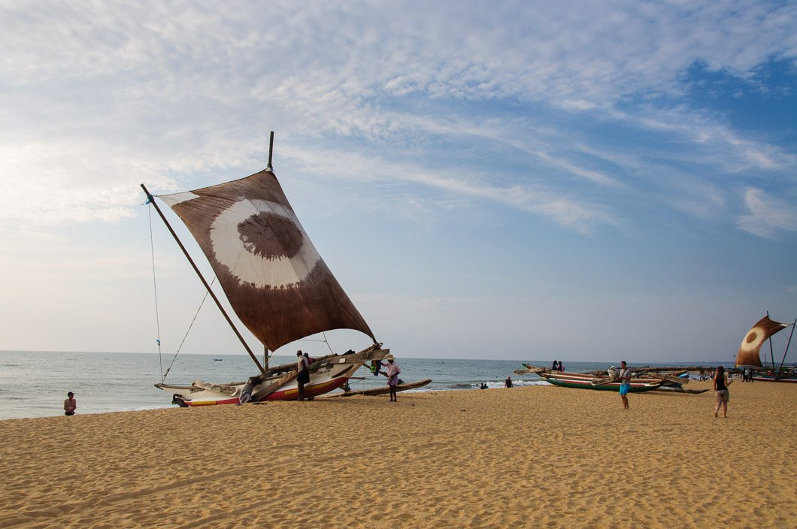
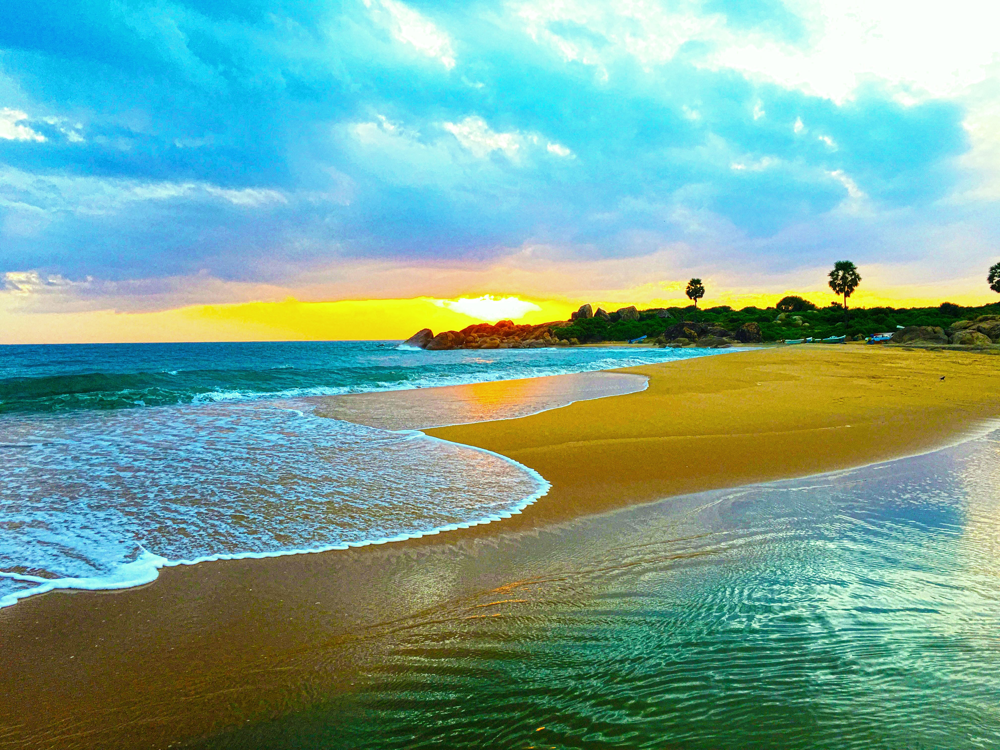
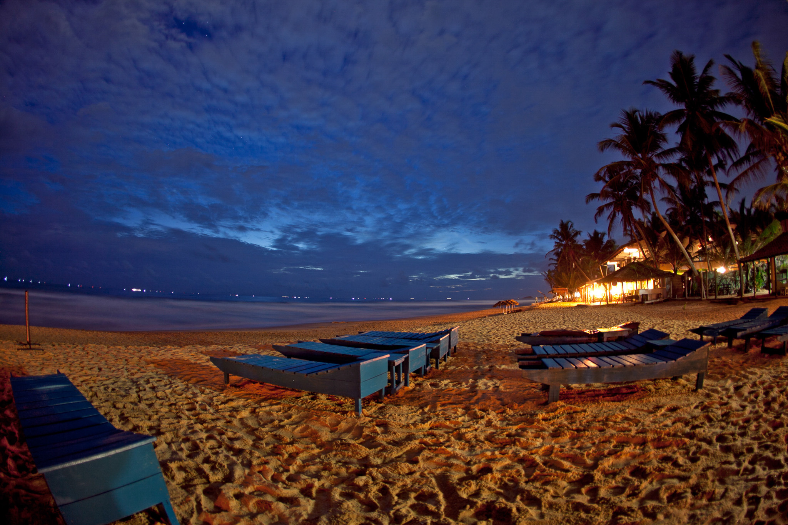

Down Below Are Different Types Of Beaches Here In Sri Lanka. First Off We Have The,
Negambo Beach

The gorgeous island of Sri Lanka is home to some of the world’s most stunning beaches. If you are looking for a holiday where you can spend days lazing around on sandy golden beaches with shimmering blue waters, then you are in for a treat! The best place in Sri Lanka to visit to enjoy its beaches is Negombo, which is located just 15 minutes away from the Bandaranaike International Airport.
Here's A Link To One Of Top Most Recognised And A 5 Star Rated Hotel.
Arugam Bay

Lovely Arugam Bay, a moon-shaped curl of soft sand, is home to a famed point break that many regard as the best surf spot in the country. It's a tiny place, with a population of a few hundred, and everything is dotted along a single road which parallels the coast. So in other words, the epitome of the laid-back beach scene that first drew surfers and sun-seekers to Sri Lanka.
Here's A Link To One Of Top Most Recognised And A 5 Star Rated Hotel.
Hikkaduwa Beach

The beaches in Hikkaduwa have been attracting tourists since the 1960s when it was first discovered. The beach stretches on spanning over kilometers and hosts many fun activities to keep the tourists engaged. These water sports include snorkeling and scuba diving for the adventure seekers.
Here's A Link To One Of Top Most Recognised And A 5 Star Rated Hotel.